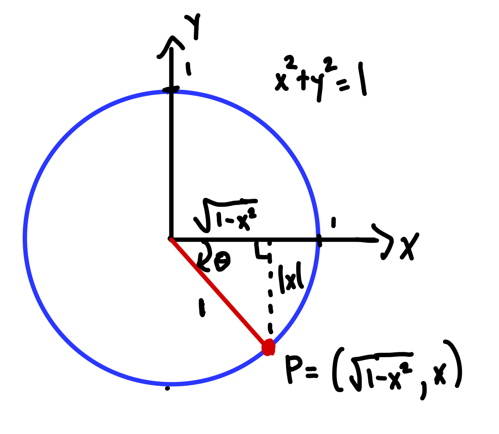

Section 1.16 Inverse trigonometric functions
Definition 1.16.1. Inverse trigonometric functions.
The following are examples of what are called inverse trigonometric functions.
On the restricted domain \([-\pi/2, \pi/2]\) the function \(f(x)=\sin x\) is one-to-one, with range \([-1,1]\text{.}\) The inverse function of \(f\) restricted to this domain is called the arcsine function, denoted \(f^{-1}(x)=\arcsin x\text{.}\)
On the restricted domain \([0, \pi]\) the function \(g(x)=\cos x\) is one-to-one, with range \([-1,1]\text{.}\) The inverse function of \(g\) restricted to this domain is called the arccosine function, denoted \(g^{-1}(x)=\arccos x\text{.}\)
On the restricted domain \((-\pi/2, \pi/2)\) the function \(h(x)=\tan x\) is one-to-one, with range \((-\infty, \infty)\text{.}\) The inverse function of \(h\) restricted to this domain is called the arctangent function, denoted \(h^{-1}(x)=\arctan x\text{.}\)
Theorem 1.16.3. Properties of inverse trigonometric functions.
The function \(\arcsin\) is an increasing function with domain \([-1,1]\) and range \([0,\pi]\text{.}\) It satisfies the following properties:
\begin{align}
\arcsin(x)=\theta \amp \iff \sin\theta=x \text{ and } -\pi/2\leq \theta\leq \pi/2\tag{1.16.1}\\
\arcsin(\sin \theta)\amp =\theta \text{ for all } -\pi/2\leq \theta\leq \pi/2\tag{1.16.2}\\
\sin(\arcsin x)\amp =x \text{ for all } -1\leq x\leq 1\text{.}\tag{1.16.3}
\end{align}
The function \(\arccos\) is a decreasing function with domain \([-1,1]\) and range \([0,\pi]\text{.}\) It satisfies the following properties:
\begin{align}
\arccos(x)=\theta \amp \iff \cos\theta=x \text{ and } 0\leq \theta\leq \pi\tag{1.16.4}\\
\arccos(\cos \theta)\amp =\theta \text{ for all } 0\leq \theta\leq \pi\tag{1.16.5}\\
\cos(\arccos x)\amp =x \text{ for all } -1\leq x\leq 1\text{.}\tag{1.16.6}
\end{align}
The function \(\arctan\) is an increasing function with domain \((-\infty, \infty)\) and range \((-\pi/2, \pi/2)\text{.}\) It satisfies the following properties:
\begin{align}
\arctan(x)=\theta \amp \iff \tan\theta=x \text{ and } -\pi/2\lt \theta\lt \pi/2\tag{1.16.7}\\
\arctan(\tan \theta)\amp =\theta \text{ for all } -\pi/2\lt \theta\lt \pi/2\tag{1.16.8}\\
\tan(\arctan x)\amp =x \text{ for all } x\tag{1.16.9}\\
\lim_{x\to\infty}\arctan x\amp =\pi/2,\hspace{5pt} \lim_{x\to-\infty}\arctan x=-\pi/2\tag{1.16.10}
\end{align}
Example 1.16.4. Computing with inverse trig functions.
Compute the following values of trigonometric functions by hand.
\(\displaystyle \displaystyle\arcsin(-1)\)
\(\displaystyle \displaystyle\arccos(-\sqrt{2}/2)\)
\(\displaystyle \displaystyle\arctan(-1/\sqrt{3})\)
\(\displaystyle\arcsin\left(\sin\left(\frac{10\pi}{11}\right)\right)\) Hint. The answer is not \(10\pi/11\text{.}\)
Solution.
Common mistake:
\(\arcsin(-1)\ne 3\pi/2\text{.}\) Why? By definition, the outputs of
\(\arcsin\) lie in the interval
\([-\pi/2, \pi/2]\text{.}\) Instead, using
(1.16.1), we have
\(\arcsin(-1)=\theta\) if and only if
\(\sin \theta=-1\) and
\(-\pi/2\leq \theta\leq \pi/2\text{.}\) The unique
\(\theta\) satisfying these two conditions is
\(\theta=-\pi/2\text{.}\) We conclude that
\(\arcsin(-1)=-\pi/2\text{.}\)
Using
(1.16.1), we have
\(\arccos(-\sqrt{2}/2)=\theta\) if and only if
\(\cos \theta=-\sqrt{2}/2\) and
\(0/\leq \theta\leq \pi\text{.}\) The unique
\(\theta\) satisfying these two conditions is
\(\theta=3\pi/4\text{.}\) We conclude that
\(\arccos(-\sqrt{2}/2)=3\pi/4\text{.}\)
Using
(1.16.7), we have
\(\arctan(-1/\sqrt{3})=\theta\) if and only if
\(\tan \theta=-1/\sqrt{3}\) and
\(-\pi/2 < \theta < \pi/2\text{.}\) Since
\(\theta=-\pi/6\) is the unique angle satifying these two conditions, we conclude that that
\(\arctan(-1/\sqrt{3})=-\pi/6\text{.}\)
Recall that \(\sin(\theta)=\sin (\pi-\theta)\) for any \(\theta\in \R\text{.}\) (You can convince yourself of this either by drawing a unit circle picture, or by using the difference identity for \(\sin\text{.}\)) It follows that
\begin{align*}
\arcsin(\sin(10\pi/11)) \amp =\arcsin(\sin(\pi-10\pi/11))\\
\amp = \arcsin(\sin (\pi /11))\\
\amp = \frac{\pi}{11} \amp (\knowl{./knowl/xref/eq_arcsin_sin.html}{\text{(1.16.2)}}, -\frac{\pi}{2}\leq \frac{\pi}{11}\leq\frac{\pi}{2})\text{.}
\end{align*}
The inverse trigonometric functions are often used to provide a single solution to an elementary trigonometric equation that we cannot solve “by hand”: i.e., equations whose solutions \(\theta\) do not correspond to one of the “familiar” angles of the unit circle. For example, \(\theta_0=\arcsin(1/3)\) is a particular solution to the equation \(\sin \theta=\frac{1}{3}\text{.}\) But what if we are asked to find all solutions to such an equation? In this case we make use of the following procedure which, given a particular solution \(\theta_0\) to a given trigonometric equation, describes what the general solution is.
Procedure 1.16.5. General solution to trig equations.
-
Sine equations.
Fix a constant \(a\text{.}\) If \(\theta=\theta_0\) is a solution to the elementary sine equation \(\sin \theta=a\text{,}\) then the general solution is given by
\begin{equation*}
\theta=\theta_0+2\pi n \text{ or } \theta=(\pi-\theta_0)+2\pi n\text{,}
\end{equation*}
where \(n\) is any integer.
-
Cosine equations.
Fix a constant \(a\text{.}\) If \(\theta=\theta_0\) is a particular solution to the elementary cosine equation \(\cos \theta=a\text{,}\) then the general solution is given by
\begin{equation*}
\theta=\theta_0+2\pi n \text{ or } \theta=-\theta_0+2\pi n\text{,}
\end{equation*}
where \(n\) is any integer.
-
Tangent equations.
Fix a constant \(a\text{.}\) If \(\theta=\theta_0\) is a particular solution to the elementary tangent equation \(\tan \theta=a\text{,}\) then the general solution is given by
\begin{equation*}
\theta=\theta_0+\pi n\text{,}
\end{equation*}
where \(n\) is any integer.
Example 1.16.6. Solving trig equations.
Find all solutions to the following trigonometric equations lying within the interval \([0,2\pi]\text{.}\) You may express your answer in terms of values of inverse trigonometric functions.
\(\displaystyle \displaystyle 3\sin 2\theta +4=6\)
\(\displaystyle \displaystyle \tan (\theta+\pi)=-10\)
Solution.
After some algebra we rewrite the equation as
\begin{equation*}
\sin 2\theta=\frac{2}{3}
\end{equation*}
or
\begin{equation}
\sin u=\frac{2}{3}\text{,}\tag{1.16.11}
\end{equation}
where
\(u=2\theta\text{.}\) Since
\(u_0=\arcsin(2/3)\) is a solution to
(1.16.11), according to
Procedure 1.16.5 the general solution is
\begin{equation*}
u=\arcsin(2/3)+2\pi n \text{ or } u=(\pi-\arcsin(2/3))+2\pi n\text{.}
\end{equation*}
Since \(u=2\theta\text{,}\) we conclude that the general solution to the original equation is
\begin{equation*}
\theta=\frac{1}{2}\arcsin(2/3)+\pi n \text{ or } \theta=\frac{1}{2}(\pi-\arcsin(2/3))+\pi n\text{.}
\end{equation*}
Which of these infinitely-many solutions lies in the prescribed interval \([0,2\pi]\text{?}\) Since \(\arcsin(2/3)\in [0,\pi/2]\text{,}\) we have \(\frac{1}{2}\arcsin(2/3)\in [0,\pi/4]\) and \(\frac{1}{2}(\pi-\arcsin(2/3)\in [\pi/4, \pi/2]\text{.}\) It follows that the solutions lying in \([0,2\pi]\) are
\begin{equation*}
\theta=\frac{1}{2}\arcsin(2/3), \frac{1}{2}\arcsin(2/3)+\pi, \frac{1}{2}(\pi-\arcsin(2/3)), \frac{1}{2}(\pi-\arcsin(2/3))+\pi\text{.}
\end{equation*}
Since \(\theta_0=\arctan(-10)-\pi\) is one solution to the given equation, the general solution is given by
\begin{equation*}
\theta=\arctan(-10)-\pi +\pi n= \arctan(-10)+(n-1)\pi \text{,}
\end{equation*}
where \(n\) is any integer. Which of these lie in the interval \([0,2\pi]\text{?}\) Since \(\arctan(-10)\in (-\pi/2, 0]\text{,}\) we have \(\arctan(-10)+\pi\in (\pi/2, \pi]\) and \(\arctan(-10)+2\pi \in (3\pi/2, 2\pi]\text{.}\) Thus the solutions \(\theta\) lying in \([0,2\pi]\) are \(\theta=\arctan(-10)+\pi\) and \(\theta=\arctan(-10)+2\pi\text{.}\)
Theorem 1.16.7. Derivatives of inverse trig functions.
The following derivative/antiderivative formulas hold:
\begin{align}
\frac{d}{dx} \arcsin x=\frac{1}{\sqrt{1-x^2}}\amp \iff \int \frac{1}{\sqrt{1-x^2}}\, dx=\arcsin x+C \amp \text{ (for all \(x\) in \((-1,1)\)) }\tag{1.16.12}\\
\frac{d}{dx} \arccos x=-\frac{1}{\sqrt{1-x^2}}\amp \iff \int \frac{1}{\sqrt{1-x^2}}\, dx=-\arccos x+C \amp \text{ (for all \(x\) in \((-1,1)\)) }\tag{1.16.13}\\
\frac{d}{dx} \arctan x=\frac{1}{1+x^2}\amp \iff \int \frac{1}{1+x^2}\, dx=\arctan x+C \amp \text{ (for all \(x\)) } \text{.}\tag{1.16.14}
\end{align}
Proof.
Proof of (1.16.12).
Let
\(f(x)=\sin x\) restricted to the domain
\(D=[-\pi/2, \pi/2]\text{,}\) and let
\(f^{-1}(x)=\arcsin x\text{.}\) Using
Theorem 1.10.8, we have
\begin{align*}
\frac{d}{dx} \arcsin x \amp = \frac{1}{f'(\arcsin x)}\\
\amp = \frac{1}{\cos(\arcsin x)}\\
\amp = \frac{1}{\sqrt{1-x^2}}\text{.}
\end{align*}
The last step here is perhaps the most interesting, and follows from the fact that
\(\cos(\arcsin x)=\sqrt{1-x^2}\) for any
\(x\in [-1,1]\text{.}\) Why is this true? Set
\(\arcsin x=\theta\text{,}\) an angle lying in
\([-\pi/2,\pi/2]\text{.}\) Using the fact that
\(\sin \theta=x\text{,}\) we can draw a unit circle picture like the one below. Since the vertical leg of the right triangle there has length
\(\abs{x}\text{,}\) the horizontal leg has length
\(\sqrt{1-\abs{x}^2}=\sqrt{1-x^2}\text{.}\) Since this length is equal to the
\(x\)-coordinate of the point
\(P\) below, we have
\(\cos \theta=\sqrt{1-x^2}\) and thus
\(\cos(\arcsin x)=\sqrt{1-x^2}\text{,}\) as claimed.

Proof of (1.16.14).
Let
\(f(x)=\tan x\) restricted to the domain
\(D=(-\pi/2, \pi/2)\text{,}\) and let
\(f^{-1}(x)=\arctan x\text{.}\) Using
Theorem 1.10.8, we have
\begin{align*}
\frac{d}{dx}\arctan x \amp = \frac{1}{f'(\arctan x)}\\
\amp = \frac{1}{\sec^2 (\arctan x)}\\
\amp = \frac{1}{(\tan(\arctan x))^2+1} \amp (\tan^2 x+1=\sec^2x)\\
\amp = \frac{1}{x^2+1} \amp (\tan(\arctan x)=x)\text{.}
\end{align*}
Example 1.16.8. Derivatives of inverse trig functions.
Find the equation of the tangent line to \(f(x)=\arccos x\) at \(x=1/2\text{.}\)
Solution.
The tangent line passes through the point
\begin{equation*}
P=(1/2, \arccos(1/2))=(1/2, \pi/3)
\end{equation*}
and has slope
\begin{equation*}
m=f'(1/2)=-\frac{1}{\sqrt{1-(1/2)^2}}=-\frac{2}{\sqrt{3}}\text{.}
\end{equation*}
Using point-slope form, we see that the line has equation
\begin{equation*}
y-\frac{\pi}{3}=\frac{-2}{\sqrt{3}}\left(x-\frac{1}{2}\right)\text{.}
\end{equation*}
Example 1.16.9. Limit computation.
Compute \(\displaystyle\lim_{x\rightarrow 1^{-}}\frac{\arccos(x^2)}{\sqrt{1-x}}\text{.}\)
Solution.
Since \(\arccos(1)=0\text{,}\) we have
\begin{align*}
\lim_{x\rightarrow 1^{-}}\frac{\arccos(x^2)}{\sqrt{1-x}}\amp =
\lim_{x\rightarrow 1^{-}}\frac{(\arccos(x^2))'}{(\sqrt{1-x})'} \amp (\text{L'Hop }, 0/0) \\
\amp = \lim_{x\rightarrow 1^{-}}\frac{-2x/\sqrt{1-x^4}}{-1/2\sqrt{1-x}}\\
\amp =\lim_{x\rightarrow 1^{-}}4x\sqrt{\frac{1-x}{1-x^4}}\\
\amp =\lim_{x\rightarrow 1^{-}}4x\sqrt{\frac{1-x}{(1-x^2)(1+x^2)}}\\
\amp =\lim_{x\rightarrow 1^{-}}4x\sqrt{\frac{1-x}{(1-x)(1+x)(1+x^2)}}\\
\amp =\lim_{x\rightarrow 1^{-}}4x\sqrt{\frac{1}{(1+x)(1+x^2)}}\\
\amp = 4\cdot \frac{1}{2}\\
\amp = 2\text{.}
\end{align*}
Example 1.16.10. Inverse trig functions as antiderivatives.
Compute \(\displaystyle\int \frac{x+1}{\sqrt{1-(x+2)^2}}\, dx\text{.}\)
Solution.
We have
\begin{align*}
\int \frac{x+1}{\sqrt{1-(x+2)^2}}\, dx \amp = \int \frac{u-1}{\sqrt{1-u^2}}\, du \amp (u=x+2, du=dx\\
\amp =\int \frac{u}{\sqrt{1-u^2}}\, du-\int \frac{1}{\sqrt{1-u^2}}\, du \\
\amp = -\sqrt{1-u^2}-\arcsin(u)+C\\
\amp = -\sqrt{1-(x+2)^2}-\arcsin(x+2)+C\text{.}
\end{align*}
Example 1.16.11. Inverse trig functions as antiderivatives.
Compute \(\displaystyle \int \frac{1}{\sqrt{3-4x^2}}\, dx\text{.}\)
Solution.
We have
\begin{align*}
\int \frac{1}{\sqrt{3-4x^2}}\, dx \amp = \int \frac{1}{\sqrt{3}\sqrt{1-\frac{4}{3}x^2}}\, dx \\
\amp = \int \frac{1}{\sqrt{3}\sqrt{1-(\frac{2}{\sqrt{3}}x)^2}}\, dx\\
\amp = \int \frac{1}{2\sqrt{1-u^2}} \amp (u=\frac{2}{\sqrt{3}}x, du=\frac{2}{\sqrt{3}}dx)\\
\amp = \frac{1}{2}\arcsin\left( \frac{2}{\sqrt{3}}x\right)+C\text{.}
\end{align*}